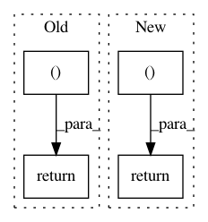

65878bf34c16e45b6ffaedef305fa260cf474498,softqlearning/policies/nn_policy.py,NNPolicy,get_action,#NNPolicy#Any#,28
Before Change
def get_action(self, observation):
feeds = {self._obs_pl: observation[None]}
action = tf.get_default_session().run(self._action, feeds)
return action.squeeze(), None
def plot_samples(self, ax_lst, obs_lst, output=None):
output = self._action if output is None else output
After Change
@overrides
def get_action(self, observation):
return self.get_actions(observation[None])[0], None
@overrides
def get_actions(self, observations):
feeds = {self._obs_pl: observations}
In pattern: SUPERPATTERN
Frequency: 4
Non-data size: 4
Instances
Project Name: rail-berkeley/softlearning
Commit Name: 65878bf34c16e45b6ffaedef305fa260cf474498
Time: 2018-01-23
Author: haarnoja@users.noreply.github.com
File Name: softqlearning/policies/nn_policy.py
Class Name: NNPolicy
Method Name: get_action
Project Name: rail-berkeley/softlearning
Commit Name: 303d31389ce3faafef257795de64bfe18220fcc7
Time: 2018-05-22
Author: haarnoja@berkeley.edu
File Name: softqlearning/envs/mujoco/gym_walker2d.py
Class Name: Walker2dEnv
Method Name: _step
Project Name: rail-berkeley/softlearning
Commit Name: 0e49e55d906660e5c9168447c77ebc6d917dda5c
Time: 2018-10-22
Author: hartikainen@berkeley.edu
File Name: softlearning/value_functions/utils.py
Class Name:
Method Name: get_Q_function_from_variant
Project Name: rail-berkeley/softlearning
Commit Name: 0e49e55d906660e5c9168447c77ebc6d917dda5c
Time: 2018-10-22
Author: hartikainen@berkeley.edu
File Name: softlearning/value_functions/utils.py
Class Name:
Method Name: get_V_function_from_variant